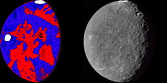

Umbriel, seen by Voyager 2
Umbriel is the third largest moon of Uranus.
It was discovered by William Lassel and is named after a character from a play by Alexander Pope.
It is the darkest of the Uranian moons and the terrain is uniform, with only impact craters.
The peculiar Wunda crater was observed along the Equator which appeared as a bright spot distinct from the otherwise dark surface.
Umbriel has been visited only by the Voyager 2 mission.
Umbriel, along with Ariel, were discovered in 1851 by William Lassell.
Umbriel is named after the gnome from Alexander Pope's The Rape of the Lock.
The name, which stems from the latin "umbra", meaning "shadow", also fits the dark appearance of Umbriel.
Originally, John Herschel intended the moons of Uranus to be given names of magical spirits from English literature.
Orbit and rotation
Umbriel orbits Uranus from a distance of around 266,000 km, making it the third major moon from Uranus.
It takes 4.1 Earth days to complete its orbit.
Umbriel's orbit has a low eccentricity of 0.004 and an inclination of 0.13°.
Like all known round satellites, Umbriel is tidally locked to Uranus.
Umbriel is not resonant with other moons.
But in the past, it was likely in a 1:3 resonance with Miranda.
Umbriel is the third largest moon of Uranus at 1,169.4 km.
Umbriel consists of mostly ice and some rock or other dense materials like heavier organics
Umbriel may be differentiated into a rocky core surrounded by an icy mantle.
A subsurface ocean is considered to be unlikely.

Albedo map of Umbriel adapted from a 1989 article by Helfenstein, P., Thomas, P. C. and Veverka, J. Red terrain is darker than blue. Two bright spots are seen here - Wunda near the Equator, and another near the south pole.
Umbriel is the darkest of Uranus's major moons.
It has a geometric albedo of only 0.26.
The process by which Umbriel's surface was darkened remains a mystery.
Two compounds have been detected on the surface - water ice and carbon dioxide, concentrated on the trailing hemisphere.
So far the only features observed on Umbriel's surface are impact craters.
Of the Uranian moons, only Oberon has a greater crater density.
The largest one is Wokolo at 210 km in diameter.
It has been suggested that a region near the limb is an impact basin 400 km wide, which would make it the largest among the moons of Uranus, although this is not confirmed.
The craters are ancient since none have any rays of lighter material, though a bright spot close to the south pole could be a newer crater that is not resolved by the images.
Images taken by Voyager 2 in 1986 reveal a crater, Wunda, seen as a bright ring about 131 km in diameter near the equator.
The spot may be frost deposits associated with the impact that created the crater or radiolytically formed carbon dioxide from all over the surface of Umbriel got trapped inside relatively cold Wunda.
Two craters east of Wunda - Vuver and Skynd - feature similarly bright central peaks.
Because of the extreme axial tilt of Uranus, Umbriel experiences great seasonal changes.
During the Voyager 2 flyby, only the southern hemisphere was luminated by the Sun, leaving the north undocumented.
Voyager 2 was the only spacecraft to visit Umbriel in 1986.
It made a flyby with the closest approach at 325,000 km, making images at a relatively low spatial resolution.
A number of missions to Uranus have been proposed by ESA, NASA, and CNSA to revisit the Uranus system.
External links